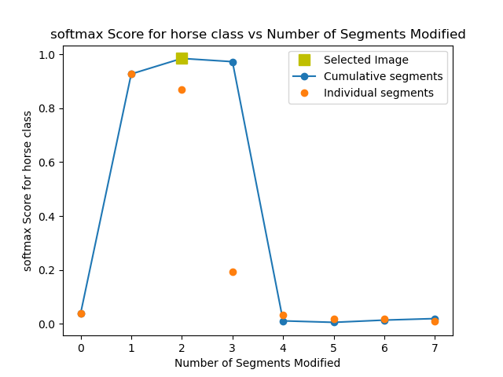
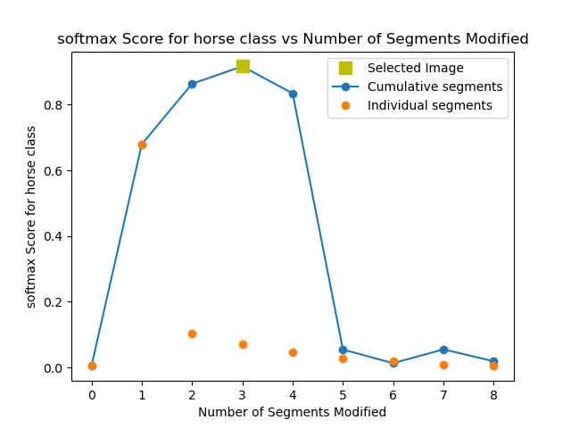
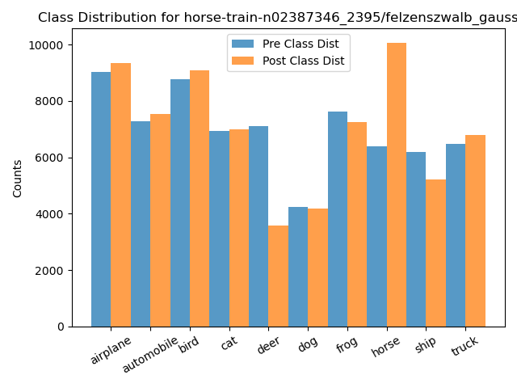
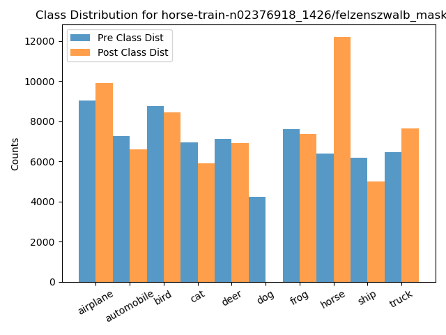
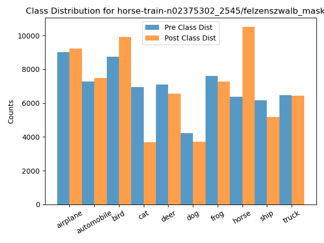
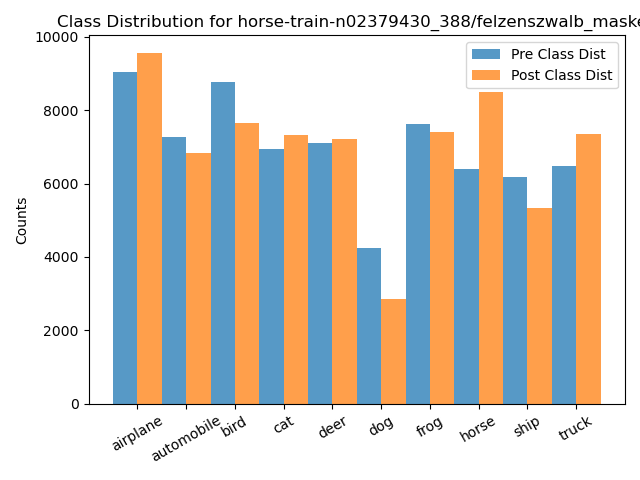
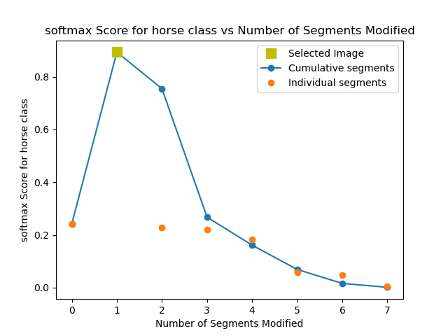
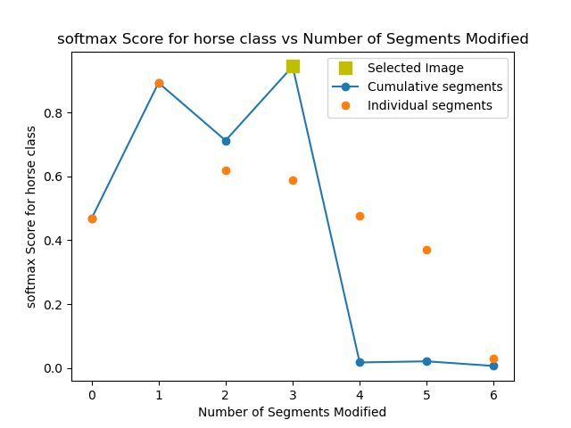
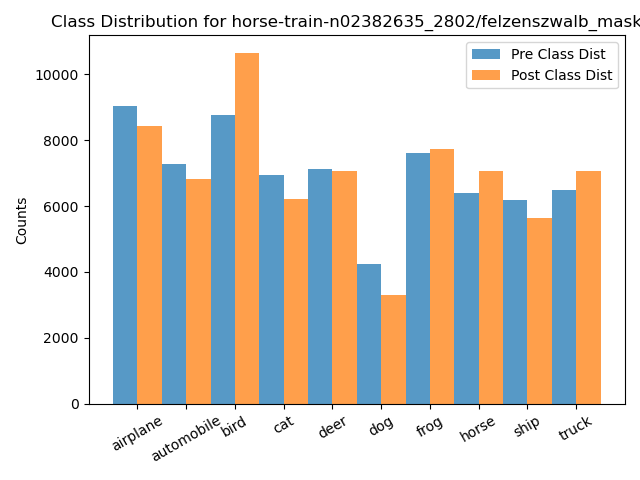

ID: horse-train-n02388735_7679/felzenszwalb_masked_softmax
Accuracy: 0.687 -> 0.45
Mean Recall: 0.687 -> 0.45
Mean Precision: 0.692 -> 0.536
Mean F1: 0.684 -> 0.416
Target Recall: 0.734 -> 0.938
Target Precision: 0.804 -> 0.19
Target F1: 0.767 -> 0.316
Orig Pred Recall: 0.877 -> 0.0
Orig Pred Precision: 0.68 -> 0.0
Orig Pred F1: 0.766 -> 0.0
ID: horse-train-n02388735_7679/felzenszwalb_gaussian_softmax
Accuracy: 0.687 -> 0.558
Mean Recall: 0.687 -> 0.558
Mean Precision: 0.692 -> 0.688
Mean F1: 0.684 -> 0.55
Target Recall: 0.734 -> 0.922
Target Precision: 0.804 -> 0.254
Target F1: 0.767 -> 0.398
Orig Pred Recall: 0.877 -> 0.0
Orig Pred Precision: 0.68 -> 0.667
Orig Pred F1: 0.766 -> 0.001
ID: horse-train-n02386853_4795/felzenszwalb_masked_softmax
Accuracy: 0.687 -> 0.594
Mean Recall: 0.687 -> 0.594
Mean Precision: 0.692 -> 0.7
Mean F1: 0.684 -> 0.584
Target Recall: 0.734 -> 0.918
Target Precision: 0.804 -> 0.287
Target F1: 0.767 -> 0.438
Orig Pred Recall: 0.61 -> 0.02
Orig Pred Precision: 0.6 -> 0.693
Orig Pred F1: 0.605 -> 0.038
ID: horse-train-n02374451_15685/felzenszwalb_masked_softmax
Accuracy: 0.687 -> 0.575
Mean Recall: 0.687 -> 0.575
Mean Precision: 0.692 -> 0.631
Mean F1: 0.684 -> 0.566
Target Recall: 0.734 -> 0.892
Target Precision: 0.804 -> 0.257
Target F1: 0.767 -> 0.399
Orig Pred Recall: 0.743 -> 0.0
Orig Pred Precision: 0.594 -> 0.0
Orig Pred F1: 0.66 -> 0.0
ID: horse-train-n02382948_3943/felzenszwalb_masked_softmax
Accuracy: 0.687 -> 0.604
Mean Recall: 0.687 -> 0.604
Mean Precision: 0.692 -> 0.665
Mean F1: 0.684 -> 0.583
Target Recall: 0.734 -> 0.887
Target Precision: 0.804 -> 0.319
Target F1: 0.767 -> 0.47
Orig Pred Recall: 0.61 -> 0.003
Orig Pred Precision: 0.6 -> 0.5
Orig Pred F1: 0.605 -> 0.006

ID: horse-train-n02382635_4627/felzenszwalb_masked_softmax
Accuracy: 0.687 -> 0.619
Mean Recall: 0.687 -> 0.619
Mean Precision: 0.692 -> 0.61
Mean F1: 0.684 -> 0.592
Target Recall: 0.734 -> 0.882
Target Precision: 0.804 -> 0.357
Target F1: 0.767 -> 0.508
Orig Pred Recall: 0.61 -> 0.0
Orig Pred Precision: 0.6 -> 0.0
Orig Pred F1: 0.605 -> 0.0
ID: horse-train-n02379430_11916/felzenszwalb_masked_softmax
Accuracy: 0.687 -> 0.58
Mean Recall: 0.687 -> 0.58
Mean Precision: 0.692 -> 0.6
Mean F1: 0.684 -> 0.565
Target Recall: 0.734 -> 0.879
Target Precision: 0.804 -> 0.297
Target F1: 0.767 -> 0.444
Orig Pred Recall: 0.877 -> 0.0
Orig Pred Precision: 0.68 -> 0.0
Orig Pred F1: 0.766 -> 0.0
ID: horse-train-n02388453_1662/felzenszwalb_masked_softmax
Accuracy: 0.687 -> 0.592
Mean Recall: 0.687 -> 0.592
Mean Precision: 0.692 -> 0.592
Mean F1: 0.684 -> 0.573
Target Recall: 0.734 -> 0.876
Target Precision: 0.804 -> 0.315
Target F1: 0.767 -> 0.464
Orig Pred Recall: 0.877 -> 0.0
Orig Pred Precision: 0.68 -> 0.0
Orig Pred F1: 0.766 -> 0.0
ID: horse-train-n02386496_6187/felzenszwalb_masked_softmax
Accuracy: 0.687 -> 0.667
Mean Recall: 0.687 -> 0.667
Mean Precision: 0.692 -> 0.693
Mean F1: 0.684 -> 0.664
Target Recall: 0.734 -> 0.872
Target Precision: 0.804 -> 0.488
Target F1: 0.767 -> 0.625
Orig Pred Recall: 0.877 -> 0.853
Orig Pred Precision: 0.68 -> 0.747
Orig Pred F1: 0.766 -> 0.796

ID: horse-train-n02378969_12933/felzenszwalb_masked_softmax
Accuracy: 0.687 -> 0.653
Mean Recall: 0.687 -> 0.653
Mean Precision: 0.692 -> 0.698
Mean F1: 0.684 -> 0.647
Target Recall: 0.734 -> 0.869
Target Precision: 0.804 -> 0.421
Target F1: 0.767 -> 0.567
Orig Pred Recall: 0.61 -> 0.303
Orig Pred Precision: 0.6 -> 0.853
Orig Pred F1: 0.605 -> 0.447
ID: horse-train-n02388453_1662/felzenszwalb_gaussian_softmax
Accuracy: 0.687 -> 0.596
Mean Recall: 0.687 -> 0.596
Mean Precision: 0.692 -> 0.59
Mean F1: 0.684 -> 0.576
Target Recall: 0.734 -> 0.864
Target Precision: 0.804 -> 0.326
Target F1: 0.767 -> 0.474
Orig Pred Recall: 0.877 -> 0.0
Orig Pred Precision: 0.68 -> 0.0
Orig Pred F1: 0.766 -> 0.0
ID: horse-train-n02379329_5000/felzenszwalb_masked_softmax
Accuracy: 0.687 -> 0.623
Mean Recall: 0.687 -> 0.623
Mean Precision: 0.692 -> 0.606
Mean F1: 0.684 -> 0.593
Target Recall: 0.734 -> 0.862
Target Precision: 0.804 -> 0.386
Target F1: 0.767 -> 0.533
Orig Pred Recall: 0.61 -> 0.0
Orig Pred Precision: 0.6 -> 0.0
Orig Pred F1: 0.605 -> 0.0
ID: horse-train-n02377291_419/felzenszwalb_masked_softmax
Accuracy: 0.687 -> 0.638
Mean Recall: 0.687 -> 0.638
Mean Precision: 0.692 -> 0.69
Mean F1: 0.684 -> 0.618
Target Recall: 0.734 -> 0.861
Target Precision: 0.804 -> 0.413
Target F1: 0.767 -> 0.558
Orig Pred Recall: 0.549 -> 0.09
Orig Pred Precision: 0.553 -> 0.79
Orig Pred F1: 0.551 -> 0.161
ID: horse-train-n02381831_3869/felzenszwalb_masked_softmax
Accuracy: 0.687 -> 0.625
Mean Recall: 0.687 -> 0.625
Mean Precision: 0.692 -> 0.603
Mean F1: 0.684 -> 0.595
Target Recall: 0.734 -> 0.857
Target Precision: 0.804 -> 0.389
Target F1: 0.767 -> 0.535
Orig Pred Recall: 0.61 -> 0.0
Orig Pred Precision: 0.6 -> 0.0
Orig Pred F1: 0.605 -> 0.0
ID: horse-train-n02388917_7091/felzenszwalb_masked_softmax
Accuracy: 0.687 -> 0.628
Mean Recall: 0.687 -> 0.628
Mean Precision: 0.692 -> 0.601
Mean F1: 0.684 -> 0.597
Target Recall: 0.734 -> 0.854
Target Precision: 0.804 -> 0.4
Target F1: 0.767 -> 0.545
Orig Pred Recall: 0.61 -> 0.0
Orig Pred Precision: 0.6 -> 0.0
Orig Pred F1: 0.605 -> 0.0
ID: horse-train-n02382132_1530/felzenszwalb_masked_softmax
Accuracy: 0.687 -> 0.596
Mean Recall: 0.687 -> 0.596
Mean Precision: 0.692 -> 0.588
Mean F1: 0.684 -> 0.576
Target Recall: 0.734 -> 0.852
Target Precision: 0.804 -> 0.329
Target F1: 0.767 -> 0.474
Orig Pred Recall: 0.877 -> 0.0
Orig Pred Precision: 0.68 -> 0.0
Orig Pred F1: 0.766 -> 0.0
ID: horse-train-n02377388_1524/felzenszwalb_gaussian_softmax
Accuracy: 0.687 -> 0.632
Mean Recall: 0.687 -> 0.632
Mean Precision: 0.692 -> 0.662
Mean F1: 0.684 -> 0.601
Target Recall: 0.734 -> 0.849
Target Precision: 0.804 -> 0.414
Target F1: 0.767 -> 0.556
Orig Pred Recall: 0.61 -> 0.006
Orig Pred Precision: 0.6 -> 0.594
Orig Pred F1: 0.605 -> 0.012
ID: horse-train-n02377388_1524/felzenszwalb_masked_softmax
Accuracy: 0.687 -> 0.631
Mean Recall: 0.687 -> 0.631
Mean Precision: 0.692 -> 0.628
Mean F1: 0.684 -> 0.599
Target Recall: 0.734 -> 0.849
Target Precision: 0.804 -> 0.411
Target F1: 0.767 -> 0.553
Orig Pred Recall: 0.61 -> 0.001
Orig Pred Precision: 0.6 -> 0.263
Orig Pred F1: 0.605 -> 0.001
ID: horse-train-n02387346_2395/felzenszwalb_masked_softmax
Accuracy: 0.687 -> 0.634
Mean Recall: 0.687 -> 0.634
Mean Precision: 0.692 -> 0.675
Mean F1: 0.684 -> 0.603
Target Recall: 0.734 -> 0.848
Target Precision: 0.804 -> 0.423
Target F1: 0.767 -> 0.565
Orig Pred Recall: 0.61 -> 0.007
Orig Pred Precision: 0.6 -> 0.762
Orig Pred F1: 0.605 -> 0.014

ID: horse-train-n02388735_10157/felzenszwalb_gaussian_softmax
Accuracy: 0.687 -> 0.609
Mean Recall: 0.687 -> 0.609
Mean Precision: 0.692 -> 0.68
Mean F1: 0.684 -> 0.605
Target Recall: 0.734 -> 0.847
Target Precision: 0.804 -> 0.358
Target F1: 0.767 -> 0.503
Orig Pred Recall: 0.877 -> 0.195
Orig Pred Precision: 0.68 -> 0.855
Orig Pred F1: 0.766 -> 0.318
ID: horse-train-n02386014_2068/felzenszwalb_gaussian_softmax
Accuracy: 0.687 -> 0.602
Mean Recall: 0.687 -> 0.602
Mean Precision: 0.692 -> 0.584
Mean F1: 0.684 -> 0.579
Target Recall: 0.734 -> 0.847
Target Precision: 0.804 -> 0.349
Target F1: 0.767 -> 0.494
Orig Pred Recall: 0.877 -> 0.0
Orig Pred Precision: 0.68 -> 0.0
Orig Pred F1: 0.766 -> 0.0
ID: horse-train-n02377388_11114/felzenszwalb_masked_softmax
Accuracy: 0.687 -> 0.584
Mean Recall: 0.687 -> 0.584
Mean Precision: 0.692 -> 0.596
Mean F1: 0.684 -> 0.564
Target Recall: 0.734 -> 0.846
Target Precision: 0.804 -> 0.325
Target F1: 0.767 -> 0.47
Orig Pred Recall: 0.668 -> 0.0
Orig Pred Precision: 0.722 -> 0.0
Orig Pred F1: 0.694 -> 0.0
ID: horse-train-n02388735_10157/felzenszwalb_masked_softmax
Accuracy: 0.687 -> 0.591
Mean Recall: 0.687 -> 0.591
Mean Precision: 0.692 -> 0.577
Mean F1: 0.684 -> 0.566
Target Recall: 0.734 -> 0.842
Target Precision: 0.804 -> 0.362
Target F1: 0.767 -> 0.507
Orig Pred Recall: 0.877 -> 0.0
Orig Pred Precision: 0.68 -> 0.0
Orig Pred F1: 0.766 -> 0.0
ID: horse-train-n02378969_5497/felzenszwalb_masked_softmax
Accuracy: 0.687 -> 0.613
Mean Recall: 0.687 -> 0.613
Mean Precision: 0.692 -> 0.599
Mean F1: 0.684 -> 0.588
Target Recall: 0.734 -> 0.837
Target Precision: 0.804 -> 0.344
Target F1: 0.767 -> 0.488
Orig Pred Recall: 0.743 -> 0.0
Orig Pred Precision: 0.594 -> 0.0
Orig Pred F1: 0.66 -> 0.0
ID: horse-train-n02386014_1633/felzenszwalb_gaussian_softmax
Accuracy: 0.687 -> 0.632
Mean Recall: 0.687 -> 0.632
Mean Precision: 0.692 -> 0.595
Mean F1: 0.684 -> 0.599
Target Recall: 0.734 -> 0.836
Target Precision: 0.804 -> 0.421
Target F1: 0.767 -> 0.56
Orig Pred Recall: 0.61 -> 0.0
Orig Pred Precision: 0.6 -> 0.0
Orig Pred F1: 0.605 -> 0.0
ID: horse-train-n02386014_2068/felzenszwalb_masked_softmax
Accuracy: 0.687 -> 0.603
Mean Recall: 0.687 -> 0.603
Mean Precision: 0.692 -> 0.583
Mean F1: 0.684 -> 0.579
Target Recall: 0.734 -> 0.835
Target Precision: 0.804 -> 0.352
Target F1: 0.767 -> 0.495
Orig Pred Recall: 0.877 -> 0.0
Orig Pred Precision: 0.68 -> 0.0
Orig Pred F1: 0.766 -> 0.0
ID: horse-train-n02382850_7000/felzenszwalb_masked_softmax
Accuracy: 0.687 -> 0.629
Mean Recall: 0.687 -> 0.629
Mean Precision: 0.692 -> 0.601
Mean F1: 0.684 -> 0.598
Target Recall: 0.734 -> 0.829
Target Precision: 0.804 -> 0.424
Target F1: 0.767 -> 0.561
Orig Pred Recall: 0.61 -> 0.0
Orig Pred Precision: 0.6 -> 0.0
Orig Pred F1: 0.605 -> 0.0
ID: horse-train-n02379329_5000/felzenszwalb_gaussian_softmax
Accuracy: 0.687 -> 0.634
Mean Recall: 0.687 -> 0.634
Mean Precision: 0.692 -> 0.646
Mean F1: 0.684 -> 0.602
Target Recall: 0.734 -> 0.828
Target Precision: 0.804 -> 0.435
Target F1: 0.767 -> 0.571
Orig Pred Recall: 0.61 -> 0.0
Orig Pred Precision: 0.6 -> 0.5
Orig Pred F1: 0.605 -> 0.001
ID: horse-train-n02387346_2395/felzenszwalb_gaussian_softmax
Accuracy: 0.687 -> 0.672
Mean Recall: 0.687 -> 0.672
Mean Precision: 0.692 -> 0.689
Mean F1: 0.684 -> 0.664
Target Recall: 0.734 -> 0.827
Target Precision: 0.804 -> 0.575
Target F1: 0.767 -> 0.678
Orig Pred Recall: 0.61 -> 0.394
Orig Pred Precision: 0.6 -> 0.772
Orig Pred F1: 0.605 -> 0.521
ID: horse-train-n02382338_4999/felzenszwalb_masked_softmax
Accuracy: 0.687 -> 0.604
Mean Recall: 0.687 -> 0.604
Mean Precision: 0.692 -> 0.603
Mean F1: 0.684 -> 0.58
Target Recall: 0.734 -> 0.825
Target Precision: 0.804 -> 0.36
Target F1: 0.767 -> 0.502
Orig Pred Recall: 0.743 -> 0.0
Orig Pred Precision: 0.594 -> 0.0
Orig Pred F1: 0.66 -> 0.0
ID: horse-train-n02381831_30/felzenszwalb_gaussian_softmax
Accuracy: 0.687 -> 0.671
Mean Recall: 0.687 -> 0.671
Mean Precision: 0.692 -> 0.689
Mean F1: 0.684 -> 0.663
Target Recall: 0.734 -> 0.825
Target Precision: 0.804 -> 0.56
Target F1: 0.767 -> 0.667
Orig Pred Recall: 0.61 -> 0.355
Orig Pred Precision: 0.6 -> 0.813
Orig Pred F1: 0.605 -> 0.494

ID: horse-train-n02374451_18133/felzenszwalb_gaussian_softmax
Accuracy: 0.687 -> 0.676
Mean Recall: 0.687 -> 0.676
Mean Precision: 0.692 -> 0.688
Mean F1: 0.684 -> 0.669
Target Recall: 0.734 -> 0.825
Target Precision: 0.804 -> 0.639
Target F1: 0.767 -> 0.72
Orig Pred Recall: 0.61 -> 0.555
Orig Pred Precision: 0.6 -> 0.629
Orig Pred F1: 0.605 -> 0.59
ID: horse-train-n02376918_1426/felzenszwalb_masked_softmax
Accuracy: 0.687 -> 0.642
Mean Recall: 0.687 -> 0.642
Mean Precision: 0.692 -> 0.646
Mean F1: 0.684 -> 0.609
Target Recall: 0.734 -> 0.824
Target Precision: 0.804 -> 0.472
Target F1: 0.767 -> 0.601
Orig Pred Recall: 0.427 -> 0.0
Orig Pred Precision: 0.706 -> 0.5
Orig Pred F1: 0.532 -> 0.001
ID: horse-train-n02375302_2545/felzenszwalb_masked_softmax
Accuracy: 0.687 -> 0.67
Mean Recall: 0.687 -> 0.67
Mean Precision: 0.692 -> 0.691
Mean F1: 0.684 -> 0.662
Target Recall: 0.734 -> 0.824
Target Precision: 0.804 -> 0.548
Target F1: 0.767 -> 0.659
Orig Pred Recall: 0.549 -> 0.381
Orig Pred Precision: 0.553 -> 0.722
Orig Pred F1: 0.551 -> 0.499
ID: horse-train-n02381460_2684/felzenszwalb_gaussian_softmax
Accuracy: 0.687 -> 0.678
Mean Recall: 0.687 -> 0.678
Mean Precision: 0.692 -> 0.688
Mean F1: 0.684 -> 0.671
Target Recall: 0.734 -> 0.824
Target Precision: 0.804 -> 0.626
Target F1: 0.767 -> 0.712
Orig Pred Recall: 0.61 -> 0.489
Orig Pred Precision: 0.6 -> 0.693
Orig Pred F1: 0.605 -> 0.574
ID: horse-train-n02379081_779/felzenszwalb_masked_softmax
Accuracy: 0.687 -> 0.644
Mean Recall: 0.687 -> 0.645
Mean Precision: 0.692 -> 0.688
Mean F1: 0.684 -> 0.616
Target Recall: 0.734 -> 0.824
Target Precision: 0.804 -> 0.479
Target F1: 0.767 -> 0.605
Orig Pred Recall: 0.427 -> 0.046
Orig Pred Precision: 0.706 -> 0.913
Orig Pred F1: 0.532 -> 0.088
ID: horse-train-n02386968_10756/felzenszwalb_masked_softmax
Accuracy: 0.687 -> 0.678
Mean Recall: 0.687 -> 0.678
Mean Precision: 0.692 -> 0.689
Mean F1: 0.684 -> 0.672
Target Recall: 0.734 -> 0.822
Target Precision: 0.804 -> 0.598
Target F1: 0.767 -> 0.692
Orig Pred Recall: 0.549 -> 0.478
Orig Pred Precision: 0.553 -> 0.628
Orig Pred F1: 0.551 -> 0.543
ID: horse-train-n02387346_5562/felzenszwalb_masked_softmax
Accuracy: 0.687 -> 0.672
Mean Recall: 0.687 -> 0.672
Mean Precision: 0.692 -> 0.693
Mean F1: 0.684 -> 0.668
Target Recall: 0.734 -> 0.816
Target Precision: 0.804 -> 0.62
Target F1: 0.767 -> 0.705
Orig Pred Recall: 0.549 -> 0.51
Orig Pred Precision: 0.553 -> 0.597
Orig Pred F1: 0.551 -> 0.55
ID: horse-train-n02378625_7088/felzenszwalb_masked_softmax
Accuracy: 0.687 -> 0.609
Mean Recall: 0.687 -> 0.609
Mean Precision: 0.692 -> 0.591
Mean F1: 0.684 -> 0.579
Target Recall: 0.734 -> 0.815
Target Precision: 0.804 -> 0.39
Target F1: 0.767 -> 0.527
Orig Pred Recall: 0.668 -> 0.0
Orig Pred Precision: 0.722 -> 0.0
Orig Pred F1: 0.694 -> 0.0
ID: horse-train-n02382039_3586/felzenszwalb_masked_softmax
Accuracy: 0.687 -> 0.611
Mean Recall: 0.687 -> 0.611
Mean Precision: 0.692 -> 0.588
Mean F1: 0.684 -> 0.582
Target Recall: 0.734 -> 0.814
Target Precision: 0.804 -> 0.392
Target F1: 0.767 -> 0.529
Orig Pred Recall: 0.668 -> 0.0
Orig Pred Precision: 0.722 -> 0.0
Orig Pred F1: 0.694 -> 0.0

ID: horse-train-n02382437_4651/felzenszwalb_gaussian_softmax
Accuracy: 0.687 -> 0.644
Mean Recall: 0.687 -> 0.644
Mean Precision: 0.692 -> 0.667
Mean F1: 0.684 -> 0.611
Target Recall: 0.734 -> 0.812
Target Precision: 0.804 -> 0.494
Target F1: 0.767 -> 0.614
Orig Pred Recall: 0.427 -> 0.006
Orig Pred Precision: 0.706 -> 0.724
Orig Pred F1: 0.532 -> 0.012
ID: horse-train-n02382039_3586/felzenszwalb_gaussian_softmax
Accuracy: 0.687 -> 0.616
Mean Recall: 0.687 -> 0.616
Mean Precision: 0.692 -> 0.587
Mean F1: 0.684 -> 0.586
Target Recall: 0.734 -> 0.809
Target Precision: 0.804 -> 0.401
Target F1: 0.767 -> 0.536
Orig Pred Recall: 0.668 -> 0.0
Orig Pred Precision: 0.722 -> 0.0
Orig Pred F1: 0.694 -> 0.0
ID: horse-train-n02376918_1426/felzenszwalb_gaussian_softmax
Accuracy: 0.687 -> 0.641
Mean Recall: 0.687 -> 0.641
Mean Precision: 0.692 -> 0.592
Mean F1: 0.684 -> 0.607
Target Recall: 0.734 -> 0.805
Target Precision: 0.804 -> 0.494
Target F1: 0.767 -> 0.612
Orig Pred Recall: 0.427 -> 0.0
Orig Pred Precision: 0.706 -> 0.0
Orig Pred F1: 0.532 -> 0.0
ID: horse-train-n02383231_7709/felzenszwalb_masked_softmax
Accuracy: 0.687 -> 0.597
Mean Recall: 0.687 -> 0.597
Mean Precision: 0.692 -> 0.592
Mean F1: 0.684 -> 0.57
Target Recall: 0.734 -> 0.802
Target Precision: 0.804 -> 0.364
Target F1: 0.767 -> 0.501
Orig Pred Recall: 0.769 -> 0.0
Orig Pred Precision: 0.74 -> 0.0
Orig Pred F1: 0.754 -> 0.0
ID: horse-train-n02374451_5683/felzenszwalb_masked_softmax
Accuracy: 0.687 -> 0.682
Mean Recall: 0.687 -> 0.682
Mean Precision: 0.692 -> 0.688
Mean F1: 0.684 -> 0.675
Target Recall: 0.734 -> 0.802
Target Precision: 0.804 -> 0.657
Target F1: 0.767 -> 0.722
Orig Pred Recall: 0.549 -> 0.462
Orig Pred Precision: 0.553 -> 0.642
Orig Pred F1: 0.551 -> 0.537
ID: horse-train-n02381460_2684/felzenszwalb_masked_softmax
Accuracy: 0.687 -> 0.684
Mean Recall: 0.687 -> 0.684
Mean Precision: 0.692 -> 0.69
Mean F1: 0.684 -> 0.678
Target Recall: 0.734 -> 0.798
Target Precision: 0.804 -> 0.705
Target F1: 0.767 -> 0.748
Orig Pred Recall: 0.61 -> 0.555
Orig Pred Precision: 0.6 -> 0.643
Orig Pred F1: 0.605 -> 0.596
ID: horse-train-n02387722_18406/felzenszwalb_masked_softmax
Accuracy: 0.687 -> 0.683
Mean Recall: 0.687 -> 0.683
Mean Precision: 0.692 -> 0.69
Mean F1: 0.684 -> 0.679
Target Recall: 0.734 -> 0.797
Target Precision: 0.804 -> 0.636
Target F1: 0.767 -> 0.708
Orig Pred Recall: 0.743 -> 0.596
Orig Pred Precision: 0.594 -> 0.768
Orig Pred F1: 0.66 -> 0.671

ID: horse-train-n02387254_7565/felzenszwalb_gaussian_softmax
Accuracy: 0.687 -> 0.679
Mean Recall: 0.687 -> 0.679
Mean Precision: 0.692 -> 0.69
Mean F1: 0.684 -> 0.671
Target Recall: 0.734 -> 0.797
Target Precision: 0.804 -> 0.64
Target F1: 0.767 -> 0.71
Orig Pred Recall: 0.549 -> 0.402
Orig Pred Precision: 0.553 -> 0.701
Orig Pred F1: 0.551 -> 0.511
ID: horse-train-n02379430_388/felzenszwalb_masked_softmax
Accuracy: 0.687 -> 0.679
Mean Recall: 0.687 -> 0.679
Mean Precision: 0.692 -> 0.693
Mean F1: 0.684 -> 0.672
Target Recall: 0.734 -> 0.795
Target Precision: 0.804 -> 0.655
Target F1: 0.767 -> 0.718
Orig Pred Recall: 0.427 -> 0.33
Orig Pred Precision: 0.706 -> 0.81
Orig Pred F1: 0.532 -> 0.469
ID: horse-train-n02380052_1491/felzenszwalb_masked_softmax
Accuracy: 0.687 -> 0.671
Mean Recall: 0.687 -> 0.671
Mean Precision: 0.692 -> 0.688
Mean F1: 0.684 -> 0.666
Target Recall: 0.734 -> 0.793
Target Precision: 0.804 -> 0.627
Target F1: 0.767 -> 0.7
Orig Pred Recall: 0.668 -> 0.514
Orig Pred Precision: 0.722 -> 0.848
Orig Pred F1: 0.694 -> 0.64
ID: horse-train-n02381364_13139/felzenszwalb_masked_softmax
Accuracy: 0.687 -> 0.667
Mean Recall: 0.687 -> 0.667
Mean Precision: 0.692 -> 0.693
Mean F1: 0.684 -> 0.656
Target Recall: 0.734 -> 0.793
Target Precision: 0.804 -> 0.627
Target F1: 0.767 -> 0.7
Orig Pred Recall: 0.743 -> 0.759
Orig Pred Precision: 0.594 -> 0.568
Orig Pred F1: 0.66 -> 0.65
ID: horse-train-n02386014_1633/felzenszwalb_masked_softmax
Accuracy: 0.687 -> 0.633
Mean Recall: 0.687 -> 0.633
Mean Precision: 0.692 -> 0.592
Mean F1: 0.684 -> 0.598
Target Recall: 0.734 -> 0.792
Target Precision: 0.804 -> 0.477
Target F1: 0.767 -> 0.595
Orig Pred Recall: 0.61 -> 0.0
Orig Pred Precision: 0.6 -> 0.0
Orig Pred F1: 0.605 -> 0.0
ID: horse-train-n02375302_2545/felzenszwalb_gaussian_softmax
Accuracy: 0.687 -> 0.672
Mean Recall: 0.687 -> 0.672
Mean Precision: 0.692 -> 0.695
Mean F1: 0.684 -> 0.663
Target Recall: 0.734 -> 0.791
Target Precision: 0.804 -> 0.625
Target F1: 0.767 -> 0.698
Orig Pred Recall: 0.549 -> 0.332
Orig Pred Precision: 0.553 -> 0.769
Orig Pred F1: 0.551 -> 0.464
ID: horse-train-n02388735_10656/felzenszwalb_gaussian_softmax
Accuracy: 0.687 -> 0.685
Mean Recall: 0.687 -> 0.685
Mean Precision: 0.692 -> 0.692
Mean F1: 0.684 -> 0.679
Target Recall: 0.734 -> 0.786
Target Precision: 0.804 -> 0.705
Target F1: 0.767 -> 0.743
Orig Pred Recall: 0.743 -> 0.727
Orig Pred Precision: 0.594 -> 0.619
Orig Pred F1: 0.66 -> 0.669
ID: horse-train-n02387722_18406/felzenszwalb_gaussian_softmax
Accuracy: 0.687 -> 0.686
Mean Recall: 0.687 -> 0.686
Mean Precision: 0.692 -> 0.692
Mean F1: 0.684 -> 0.681
Target Recall: 0.734 -> 0.784
Target Precision: 0.804 -> 0.705
Target F1: 0.767 -> 0.743
Orig Pred Recall: 0.743 -> 0.684
Orig Pred Precision: 0.594 -> 0.668
Orig Pred F1: 0.66 -> 0.676
ID: horse-train-n02379430_388/felzenszwalb_gaussian_softmax
Accuracy: 0.687 -> 0.677
Mean Recall: 0.687 -> 0.677
Mean Precision: 0.692 -> 0.692
Mean F1: 0.684 -> 0.667
Target Recall: 0.734 -> 0.783
Target Precision: 0.804 -> 0.669
Target F1: 0.767 -> 0.722
Orig Pred Recall: 0.427 -> 0.3
Orig Pred Precision: 0.706 -> 0.846
Orig Pred F1: 0.532 -> 0.443
ID: horse-train-n02378969_5497/felzenszwalb_gaussian_softmax
Accuracy: 0.687 -> 0.687
Mean Recall: 0.687 -> 0.687
Mean Precision: 0.692 -> 0.691
Mean F1: 0.684 -> 0.683
Target Recall: 0.734 -> 0.781
Target Precision: 0.804 -> 0.714
Target F1: 0.767 -> 0.746
Orig Pred Recall: 0.743 -> 0.679
Orig Pred Precision: 0.594 -> 0.672
Orig Pred F1: 0.66 -> 0.676
ID: horse-train-n02382437_4651/felzenszwalb_masked_softmax
Accuracy: 0.687 -> 0.681
Mean Recall: 0.687 -> 0.681
Mean Precision: 0.692 -> 0.692
Mean F1: 0.684 -> 0.674
Target Recall: 0.734 -> 0.781
Target Precision: 0.804 -> 0.706
Target F1: 0.767 -> 0.742
Orig Pred Recall: 0.427 -> 0.352
Orig Pred Precision: 0.706 -> 0.796
Orig Pred F1: 0.532 -> 0.489
ID: horse-train-n02375302_10984/felzenszwalb_masked_softmax
Accuracy: 0.687 -> 0.683
Mean Recall: 0.687 -> 0.683
Mean Precision: 0.692 -> 0.693
Mean F1: 0.684 -> 0.68
Target Recall: 0.734 -> 0.779
Target Precision: 0.804 -> 0.719
Target F1: 0.767 -> 0.748
Orig Pred Recall: 0.877 -> 0.873
Orig Pred Precision: 0.68 -> 0.692
Orig Pred F1: 0.766 -> 0.772
ID: horse-train-n02387887_4564/felzenszwalb_masked_softmax
Accuracy: 0.687 -> 0.656
Mean Recall: 0.687 -> 0.656
Mean Precision: 0.692 -> 0.702
Mean F1: 0.684 -> 0.653
Target Recall: 0.734 -> 0.778
Target Precision: 0.804 -> 0.674
Target F1: 0.767 -> 0.723
Orig Pred Recall: 0.668 -> 0.533
Orig Pred Precision: 0.722 -> 0.848
Orig Pred F1: 0.694 -> 0.655
ID: horse-train-n02381460_1727/felzenszwalb_gaussian_softmax
Accuracy: 0.687 -> 0.683
Mean Recall: 0.687 -> 0.683
Mean Precision: 0.692 -> 0.691
Mean F1: 0.684 -> 0.677
Target Recall: 0.734 -> 0.778
Target Precision: 0.804 -> 0.735
Target F1: 0.767 -> 0.755
Orig Pred Recall: 0.61 -> 0.535
Orig Pred Precision: 0.6 -> 0.671
Orig Pred F1: 0.605 -> 0.595
ID: horse-train-n02380335_2798/felzenszwalb_gaussian_softmax
Accuracy: 0.687 -> 0.681
Mean Recall: 0.687 -> 0.681
Mean Precision: 0.692 -> 0.692
Mean F1: 0.684 -> 0.673
Target Recall: 0.734 -> 0.777
Target Precision: 0.804 -> 0.713
Target F1: 0.767 -> 0.744
Orig Pred Recall: 0.427 -> 0.342
Orig Pred Precision: 0.706 -> 0.803
Orig Pred F1: 0.532 -> 0.48
ID: horse-train-n02386853_1604/felzenszwalb_gaussian_softmax
Accuracy: 0.687 -> 0.682
Mean Recall: 0.687 -> 0.682
Mean Precision: 0.692 -> 0.689
Mean F1: 0.684 -> 0.68
Target Recall: 0.734 -> 0.776
Target Precision: 0.804 -> 0.658
Target F1: 0.767 -> 0.712
Orig Pred Recall: 0.877 -> 0.71
Orig Pred Precision: 0.68 -> 0.892
Orig Pred F1: 0.766 -> 0.791
ID: horse-train-n02383231_7709/felzenszwalb_gaussian_softmax
Accuracy: 0.687 -> 0.687
Mean Recall: 0.687 -> 0.687
Mean Precision: 0.692 -> 0.693
Mean F1: 0.684 -> 0.682
Target Recall: 0.734 -> 0.776
Target Precision: 0.804 -> 0.731
Target F1: 0.767 -> 0.753
Orig Pred Recall: 0.769 -> 0.754
Orig Pred Precision: 0.74 -> 0.752
Orig Pred F1: 0.754 -> 0.753

ID: horse-train-n02380335_973/felzenszwalb_gaussian_softmax
Accuracy: 0.687 -> 0.642
Mean Recall: 0.687 -> 0.642
Mean Precision: 0.692 -> 0.592
Mean F1: 0.684 -> 0.609
Target Recall: 0.734 -> 0.772
Target Precision: 0.804 -> 0.537
Target F1: 0.767 -> 0.634
Orig Pred Recall: 0.427 -> 0.0
Orig Pred Precision: 0.706 -> 0.0
Orig Pred F1: 0.532 -> 0.0
ID: horse-train-n02382635_2802/felzenszwalb_gaussian_softmax
Accuracy: 0.687 -> 0.684
Mean Recall: 0.687 -> 0.684
Mean Precision: 0.692 -> 0.692
Mean F1: 0.684 -> 0.68
Target Recall: 0.734 -> 0.772
Target Precision: 0.804 -> 0.743
Target F1: 0.767 -> 0.757
Orig Pred Recall: 0.549 -> 0.497
Orig Pred Precision: 0.553 -> 0.596
Orig Pred F1: 0.551 -> 0.542

ID: horse-train-n02374451_10205/felzenszwalb_masked_softmax
Accuracy: 0.687 -> 0.682
Mean Recall: 0.687 -> 0.682
Mean Precision: 0.692 -> 0.691
Mean F1: 0.684 -> 0.679
Target Recall: 0.734 -> 0.772
Target Precision: 0.804 -> 0.686
Target F1: 0.767 -> 0.726
Orig Pred Recall: 0.743 -> 0.582
Orig Pred Precision: 0.594 -> 0.781
Orig Pred F1: 0.66 -> 0.667
ID: horse-train-n02380335_2798/felzenszwalb_masked_softmax
Accuracy: 0.687 -> 0.682
Mean Recall: 0.687 -> 0.682
Mean Precision: 0.692 -> 0.693
Mean F1: 0.684 -> 0.676
Target Recall: 0.734 -> 0.767
Target Precision: 0.804 -> 0.739
Target F1: 0.767 -> 0.753
Orig Pred Recall: 0.427 -> 0.369
Orig Pred Precision: 0.706 -> 0.779
Orig Pred F1: 0.532 -> 0.501
ID: horse-train-n02386014_2502/felzenszwalb_gaussian_softmax
Accuracy: 0.687 -> 0.685
Mean Recall: 0.687 -> 0.685
Mean Precision: 0.692 -> 0.691
Mean F1: 0.684 -> 0.679
Target Recall: 0.734 -> 0.763
Target Precision: 0.804 -> 0.755
Target F1: 0.767 -> 0.759
Orig Pred Recall: 0.61 -> 0.575
Orig Pred Precision: 0.6 -> 0.629
Orig Pred F1: 0.605 -> 0.601
ID: horse-train-n02382635_2802/felzenszwalb_masked_softmax
Accuracy: 0.687 -> 0.681
Mean Recall: 0.687 -> 0.681
Mean Precision: 0.692 -> 0.695
Mean F1: 0.684 -> 0.676
Target Recall: 0.734 -> 0.763
Target Precision: 0.804 -> 0.757
Target F1: 0.767 -> 0.76
Orig Pred Recall: 0.549 -> 0.509
Orig Pred Precision: 0.553 -> 0.573
Orig Pred F1: 0.551 -> 0.539
ID: horse-train-n02380335_973/felzenszwalb_masked_softmax
Accuracy: 0.687 -> 0.679
Mean Recall: 0.687 -> 0.679
Mean Precision: 0.692 -> 0.695
Mean F1: 0.684 -> 0.671
Target Recall: 0.734 -> 0.76
Target Precision: 0.804 -> 0.735
Target F1: 0.767 -> 0.747
Orig Pred Recall: 0.427 -> 0.315
Orig Pred Precision: 0.706 -> 0.83
Orig Pred F1: 0.532 -> 0.456


ID: horse-train-n02380052_1491/felzenszwalb_gaussian_softmax
Accuracy: 0.687 -> 0.682
Mean Recall: 0.687 -> 0.682
Mean Precision: 0.692 -> 0.692
Mean F1: 0.684 -> 0.678
Target Recall: 0.734 -> 0.759
Target Precision: 0.804 -> 0.757
Target F1: 0.767 -> 0.758
Orig Pred Recall: 0.668 -> 0.627
Orig Pred Precision: 0.722 -> 0.771
Orig Pred F1: 0.694 -> 0.692

ID: horse-train-n02377291_419/felzenszwalb_gaussian_softmax
Accuracy: 0.687 -> 0.687
Mean Recall: 0.687 -> 0.687
Mean Precision: 0.692 -> 0.689
Mean F1: 0.684 -> 0.681
Target Recall: 0.734 -> 0.753
Target Precision: 0.804 -> 0.767
Target F1: 0.767 -> 0.76
Orig Pred Recall: 0.549 -> 0.502
Orig Pred Precision: 0.553 -> 0.596
Orig Pred F1: 0.551 -> 0.545

ID: horse-train-n02388917_7018/felzenszwalb_masked_softmax
Accuracy: 0.687 -> 0.682
Mean Recall: 0.687 -> 0.682
Mean Precision: 0.692 -> 0.694
Mean F1: 0.684 -> 0.68
Target Recall: 0.734 -> 0.753
Target Precision: 0.804 -> 0.77
Target F1: 0.767 -> 0.761
Orig Pred Recall: 0.668 -> 0.631
Orig Pred Precision: 0.722 -> 0.773
Orig Pred F1: 0.694 -> 0.695
ID: horse-train-n02389261_6197/felzenszwalb_gaussian_softmax
Accuracy: 0.687 -> 0.687
Mean Recall: 0.687 -> 0.687
Mean Precision: 0.692 -> 0.692
Mean F1: 0.684 -> 0.683
Target Recall: 0.734 -> 0.748
Target Precision: 0.804 -> 0.78
Target F1: 0.767 -> 0.764
Orig Pred Recall: 0.61 -> 0.579
Orig Pred Precision: 0.6 -> 0.628
Orig Pred F1: 0.605 -> 0.602
ID: horse-train-n02379081_779/felzenszwalb_gaussian_softmax
Accuracy: 0.687 -> 0.679
Mean Recall: 0.687 -> 0.679
Mean Precision: 0.692 -> 0.695
Mean F1: 0.684 -> 0.673
Target Recall: 0.734 -> 0.745
Target Precision: 0.804 -> 0.755
Target F1: 0.767 -> 0.75
Orig Pred Recall: 0.427 -> 0.328
Orig Pred Precision: 0.706 -> 0.823
Orig Pred F1: 0.532 -> 0.469
ID: horse-train-n02377703_7178/felzenszwalb_masked_softmax
Accuracy: 0.687 -> 0.675
Mean Recall: 0.687 -> 0.675
Mean Precision: 0.692 -> 0.696
Mean F1: 0.684 -> 0.673
Target Recall: 0.734 -> 0.741
Target Precision: 0.804 -> 0.786
Target F1: 0.767 -> 0.763
Orig Pred Recall: 0.668 -> 0.633
Orig Pred Precision: 0.722 -> 0.775
Orig Pred F1: 0.694 -> 0.697


ID: horse-train-n02389261_1754/felzenszwalb_gaussian_softmax
Accuracy: 0.687 -> 0.685
Mean Recall: 0.687 -> 0.685
Mean Precision: 0.692 -> 0.693
Mean F1: 0.684 -> 0.68
Target Recall: 0.734 -> 0.735
Target Precision: 0.804 -> 0.79
Target F1: 0.767 -> 0.761
Orig Pred Recall: 0.427 -> 0.391
Orig Pred Precision: 0.706 -> 0.752
Orig Pred F1: 0.532 -> 0.515

ID: horse-train-n02378625_7088/felzenszwalb_gaussian_softmax
Accuracy: 0.687 -> 0.686
Mean Recall: 0.687 -> 0.686
Mean Precision: 0.692 -> 0.691
Mean F1: 0.684 -> 0.682
Target Recall: 0.734 -> 0.732
Target Precision: 0.804 -> 0.797
Target F1: 0.767 -> 0.763
Orig Pred Recall: 0.668 -> 0.619
Orig Pred Precision: 0.722 -> 0.772
Orig Pred F1: 0.694 -> 0.687

ID: horse-train-n02386496_6187/felzenszwalb_gaussian_softmax
Accuracy: 0.687 -> 0.688
Mean Recall: 0.687 -> 0.688
Mean Precision: 0.692 -> 0.693
Mean F1: 0.684 -> 0.685
Target Recall: 0.734 -> 0.729
Target Precision: 0.804 -> 0.799
Target F1: 0.767 -> 0.762
Orig Pred Recall: 0.877 -> 0.858
Orig Pred Precision: 0.68 -> 0.727
Orig Pred F1: 0.766 -> 0.787
ID: horse-train-n02389261_6197/felzenszwalb_masked_softmax
Accuracy: 0.687 -> 0.675
Mean Recall: 0.687 -> 0.675
Mean Precision: 0.692 -> 0.695
Mean F1: 0.684 -> 0.671
Target Recall: 0.734 -> 0.727
Target Precision: 0.804 -> 0.806
Target F1: 0.767 -> 0.765
Orig Pred Recall: 0.61 -> 0.465
Orig Pred Precision: 0.6 -> 0.733
Orig Pred F1: 0.605 -> 0.569
ID: horse-train-n02389261_1754/felzenszwalb_masked_softmax
Accuracy: 0.687 -> 0.64
Mean Recall: 0.687 -> 0.64
Mean Precision: 0.692 -> 0.702
Mean F1: 0.684 -> 0.611
Target Recall: 0.734 -> 0.727
Target Precision: 0.804 -> 0.778
Target F1: 0.767 -> 0.751
Orig Pred Recall: 0.427 -> 0.0
Orig Pred Precision: 0.706 -> 1.0
Orig Pred F1: 0.532 -> 0.001
ID: horse-train-n02388917_7018/felzenszwalb_gaussian_softmax
Accuracy: 0.687 -> 0.678
Mean Recall: 0.687 -> 0.678
Mean Precision: 0.692 -> 0.693
Mean F1: 0.684 -> 0.675
Target Recall: 0.734 -> 0.723
Target Precision: 0.804 -> 0.81
Target F1: 0.767 -> 0.764
Orig Pred Recall: 0.668 -> 0.617
Orig Pred Precision: 0.722 -> 0.783
Orig Pred F1: 0.694 -> 0.69
ID: horse-train-n02382338_4999/felzenszwalb_gaussian_softmax
Accuracy: 0.687 -> 0.677
Mean Recall: 0.687 -> 0.677
Mean Precision: 0.692 -> 0.694
Mean F1: 0.684 -> 0.673
Target Recall: 0.61 -> 0.678
Target Precision: 0.6 -> 0.512
Target F1: 0.605 -> 0.584
Orig Pred Recall: 0.743 -> 0.524
Orig Pred Precision: 0.594 -> 0.831
Orig Pred F1: 0.66 -> 0.643